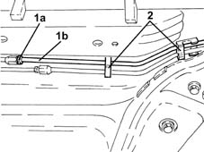
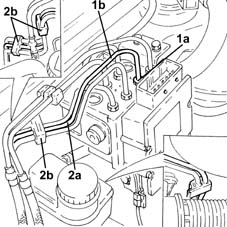
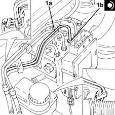
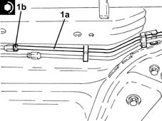

3340B62 rear connection central pipe - r r
- Path
- Procedures > 33 BRAKING SYSTEM > 3340 A(B.S. ANTI-LOCK BRAKING SYSTEM .) > 3340B abs system pipes > 3340B62 rear connection central pipe - r r
- Kind
- repair procedure (removal / refitting; the operation number is the code)
- Applies to
- all engines; all production periods
- Interactive page
- https://sloeber94.github.io/elrnDB-lYpsln/en/#/2429200
Applies to: all engines; all production periods
 Removing
Removing
 Refitting
RefittingPosition the vehicle on the ramp.
Proceed with removal 5530B10 battery - r+r .
Proceed with removal 5530B52 Battery DRIP TRAY/SUPPORT - R.R. .
Remove the protective cap on the rear brake shoe control cylinder
Connect the collection system (pipe and reservoir) to the bleed valve on the rear brake shoe control cylinder.
Loosen the bleed valve on the rear brake shoe control cylinder and wait for the brake-clutch reservoir and pipes to drain.
1. Unscrew the connector (1a) and disconnect the rigid pipe from the hydraulic unit to the connector on the pipes to the rear brakes (1b), rear brake pipe side.
2. Release the rigid pipe from the hydraulic control unit to the rear brake pipe connector from the fastenings under the body.

Applies to: all engines; all production periods
1. Undo the connectors (1a) and disconnect the rigid pipes from the hydraulic control unit to the rear brakes (1b), control unit side.
2. Remove the rigid pipe from hydraulic control unit to rear brake pipe connection (2a) after releasing from fastenings (2b) in the engine bay.

Applies to: all engines; all production periods
Refitting
RemovingRefit in its seating the rigid pipe from the hydraulic unit to the connector on the pipes to the rear brakes, and secure it with the bands in the engine bay.
1. Connect the rigid pipe from hydraulic control unit to rear brake pipe connection (1a) and tighten the connector (1b) to the specified torque.
 | Fastening | Component | Ø | Value (daNm) |
|---|---|---|---|---|
1b | Connector | RIGID BRAKING PIPE-CONT.UNIT/REAR BRAKES | - | (Control unit side) 1.4 ÷ 1.8 |

Applies to: all engines; all production periods
Secure the rigid pipe from the hydraulic unit to the rear brake pipes connector to the underbody fastenings.
1. Connect the rigid pipe from hydraulic control unit to rear brake pipe connection (1a, rear brake pipe side, and tighten the connector to the specified torque.
| Fastening | Component | Ø | Value (daNm) |
|---|---|---|---|---|
1b | Connector | RIGID BRAKING PIPE-CONT.UNIT/REAR BRAKES | - | (Rear brake. pipe side.) 1.4 ÷ 1.8 |

Applies to: all engines; all production periods
Proceed with refitting 5530B52 Battery DRIP TRAY/SUPPORT - R.R. .
Proceed with refitting 5530B10 battery - r+r .
Proceed with refitting 0010T64 brake and or clutch fluid check level and top up as necessary .
Proceed with refitting 0010T65 hydraulic brake system bleed air .
Remove the car from the ramps.